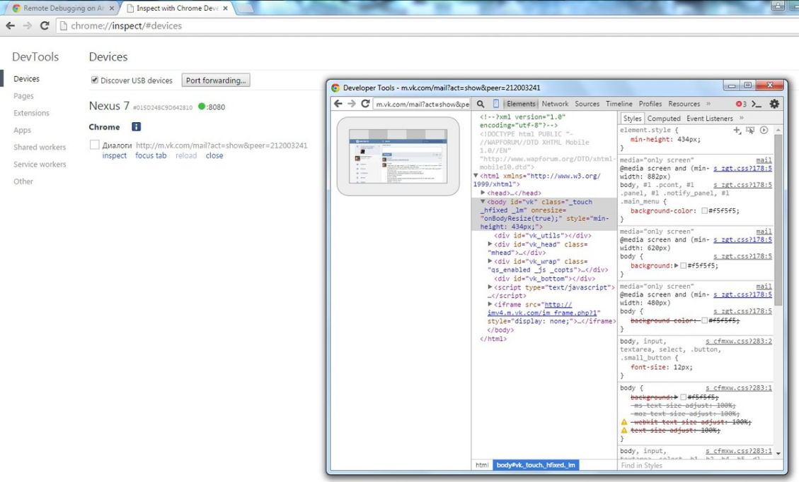

Отладка Android приложений в браузере Chrome
Официальный сайт: https://www.google.ru/chrome/browser/desktop/index.html
Справочная информация: https://developers.google.com/web/tools/chrome-devtools/remote-debugging/?utm_source=dcc&utm_medium=redirect&utm_campaign=2016q3
1. Подключить устройство к ПК
2. На устройстве включить опцию USB debugging в Developer options
3. В браузере в адресной строке ввести: chrome://inspect/#devices

Created with the Personal Edition of HelpNDoc: Free EBook and documentation generator